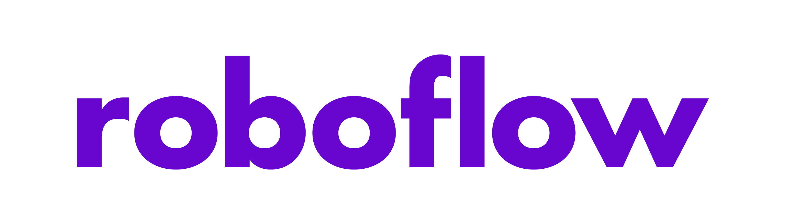

Engineering Capstone Project - Autonomous Vehicle Initiative: Obstacle Detection System
Summary: Develop a vision system to identify obstacles on and around the road
- Use of artificial intelligence for object detection
- Integration on professional grade hardware
- Optimization of safety and performance for a real time requirements
- Use of Agile project management and work cycle
- Formal reports and presentations judged by a panel of impartial engineering professors
Description
Autonomous Vehicle Initiative
The goal of the autonomous vehicle initiative was to develop a level 5 (Full Driving Automation) autonomous driving
system. The project was divided into several teams, making use of the parallelized workflows in order to maintain a
7 month development cycle. Near the end of the project term, the components were be combined and integrated.
This project marks the first endeavor into in house development of an autonomous driving solution at Carleton
University.
Obstacle Detection System
The obstacle detection team's main objective was to develop a vision system for a vehicle that can identify multiple types of traffic cones, potholes, and barricades using an artificially intelligent neural network. The main components of the vision system included a high frame rate camera, a test vehicle, and an Nvidia Jetson Nano single board computer to run the neural network in real-time.
Details
Software
The obstacle detection team used a variety of tools and resources during the development of the neural network. The primary resource for dataset development was Roboflow.

Roboflow is a tool that allows developers to mask images and compile datasets for training neural networks.
Additionally, Roboflow provides statistical analysis on the dataset called a 'health check'.
The obstacle detection team used Roboflow and its health check feature compile and refine the datasets.
The obstacle detection team used Ubuntu OS as the development environment as well as the deploy envirnonment. Ubuntu provides a lightweight interface with minimal memory overhead. The Linux kernel based operating system's prominent use in expermiental and cutting edge development in artificial intelligence was an advantage to the team.